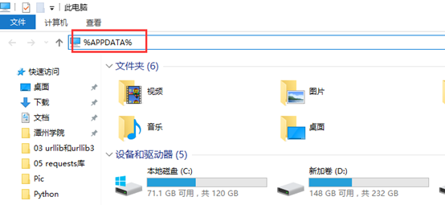
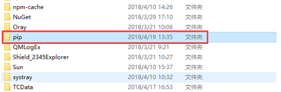
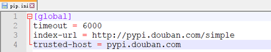
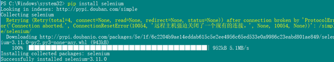

python的pip默认的安装源的位置是国外的，导致有时候下载很慢或者直接失败我们可以切换国内的源
目前国内可用的我知道的有两个
豆瓣的：http://pypi.doubanio.com/simple/
科技大学的：https://mirrors.ustc.edu.cn/pypi/web/simple/
我这里用豆瓣的
打开我的电脑在地址栏里输入：%APPDATA% 后回车，然后就进入了C:\Users\PC\AppData\Roaming 这个路劲里面

在该目录里面建一个名为 pip 的文件夹

打开新建的文件夹，在里面建一个名为： pip.ini的文件，并在文件中输入如下信息保存：
[global]
timeout = 6000
index-url = http://pypi.douban.com/simple
trusted-host = pypi.douban.com
如图：

第四步：测试下载安装selenium 发现很快就可以了

(Linux的没有实际测试)
在linux环境下的修改方式和在windows环境下修改方式基本相同，这里简单总结一下:
(1):在用户的家目录下面创建名为 .pip 文件夹（注意前面的 . 是一个隐藏的文件夹）
(2):在创建好的.pip文件夹中创建名为pip.conf的文件
(3):在pip.conf文件中输入以下内容
[global]
timeout = 6000
index-url = http://pypi.douban.com/simple
trusted-host = pypi.douban.com